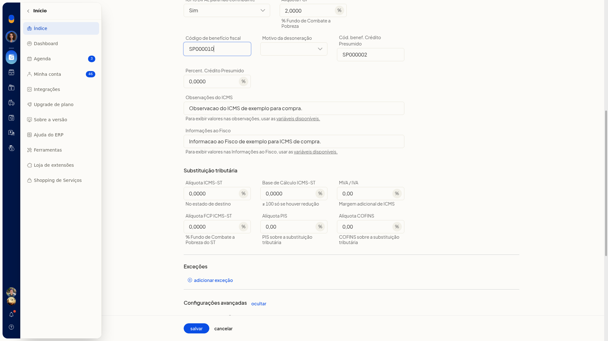
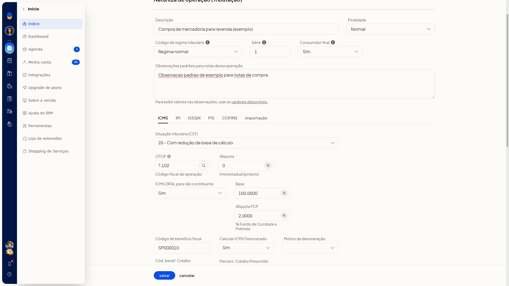
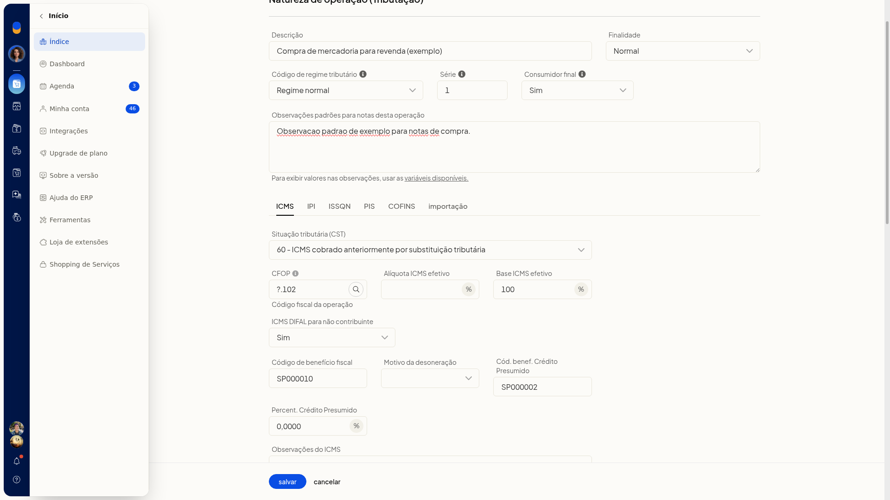
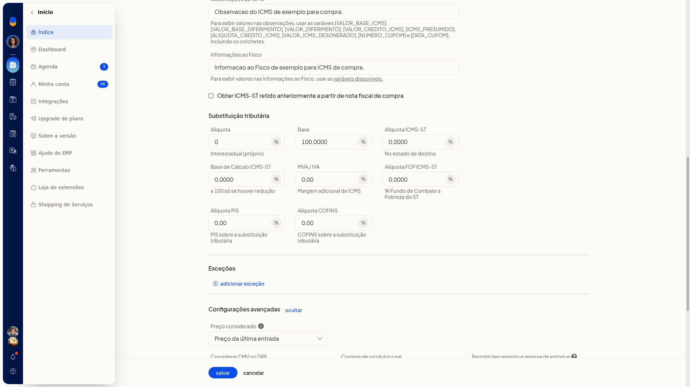
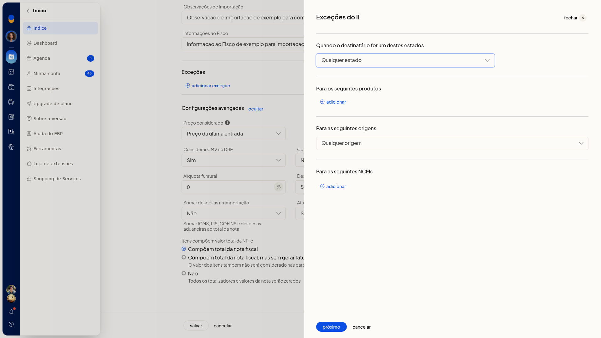
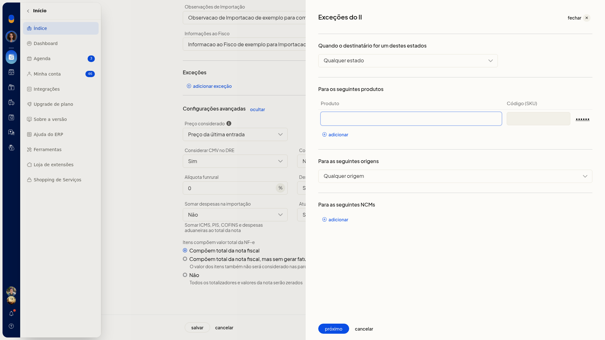
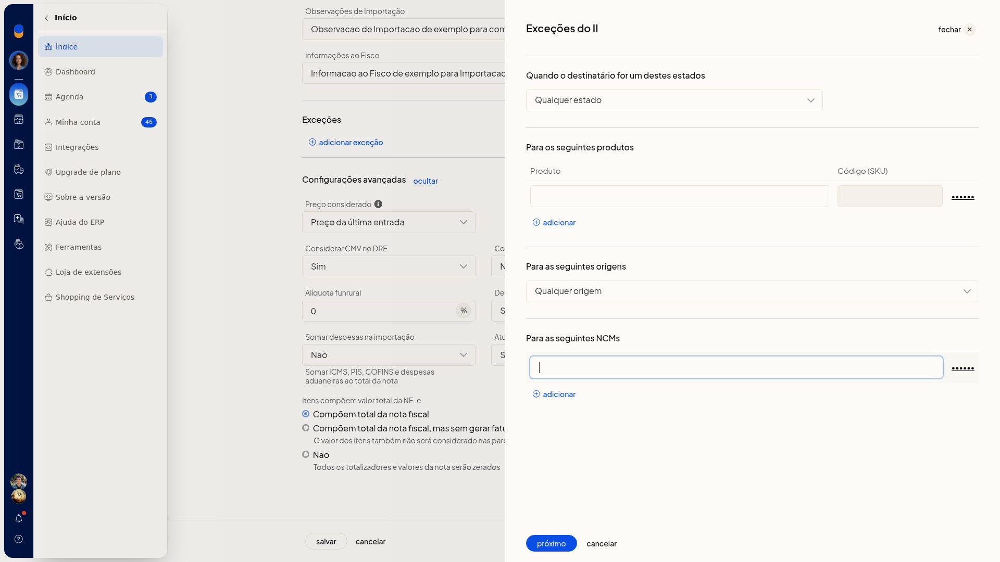
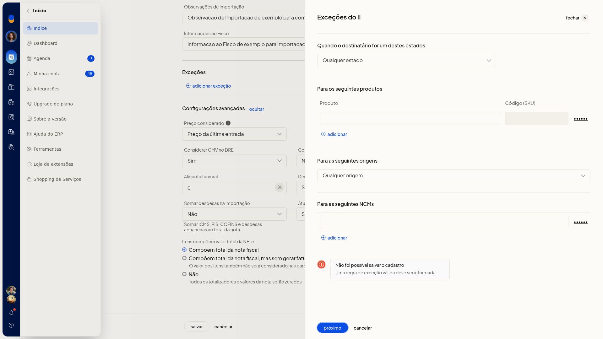

Inserir variáveis nas observações da natureza de operação
Nas observações da natureza de operação de entrada do ERP da Olist, você insere marcadores entre colchetes para exibir valores nas notas dessa operação. O mesmo vale para as informações ao fisco de cada aba de tributação.
O cadastro fica em Configurações > Configurações ERP > Notas Fiscais > Naturezas de operação de entrada (tributação).
Pré-requisitos
- A empresa precisa ter nota de entrada.
- Se a opção não aparecer para você, peça acesso ao administrador da conta.
Importante
- Digite cada marcador entre colchetes, como a lista de variáveis disponíveis mostra.
- Simples nacional abre a aba Simples. Regime normal abre a aba ICMS.
- Nas observações do ICMS, a lista inclui [NUMERO_CUPOM] e [DATA_CUPOM]. Em Informações ao Fisco do ICMS, esses dois marcadores não entram.
- Em cada aba, variáveis disponíveis lista só os marcadores daquela aba.
Instruções
-
Acesse Configurações > Configurações ERP > Notas Fiscais > Naturezas de operação de entrada (tributação).
-
Clique em Incluir natureza de operação.


-
No campo Observações padrões para notas desta operação, clique em variáveis disponíveis.
-
Digite no texto os marcadores entre colchetes que devem aparecer nas notas desta operação.
-
Selecione o Código de regime tributário para abrir a aba Simples ou a aba ICMS.

-
Na aba ICMS, clique em variáveis disponíveis de Observações do ICMS.






-
Digite, com colchetes: [VALOR_BASE_ICMS], [VALOR_BASE_DIFERIMENTO], [VALOR_DIFERIMENTO], [VALOR_CREDITO_ICMS], [ICMS_PRESUMIDO], [ALIQUOTA_CREDITO_ICMS], [VALOR_ICMS_DESONERADO], [NUMERO_CUPOM] e [DATA_CUPOM].



-
Em Informações ao Fisco do ICMS, clique em variáveis disponíveis.




-
Digite, com colchetes: [VALOR_BASE_ICMS], [VALOR_BASE_DIFERIMENTO], [VALOR_DIFERIMENTO], [VALOR_CREDITO_ICMS], [ICMS_PRESUMIDO], [ALIQUOTA_CREDITO_ICMS] e [VALOR_ICMS_DESONERADO].


-
Nas abas Simples, IPI, ISSQN, PIS, COFINS e Importação, clique em variáveis disponíveis e digite os marcadores daquela aba entre colchetes em Observações e em Informações ao Fisco.
-
Clique em Salvar. O ERP grava a natureza com os textos e os marcadores.